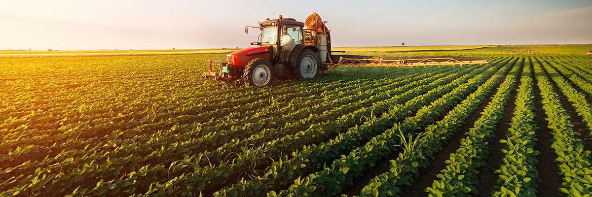
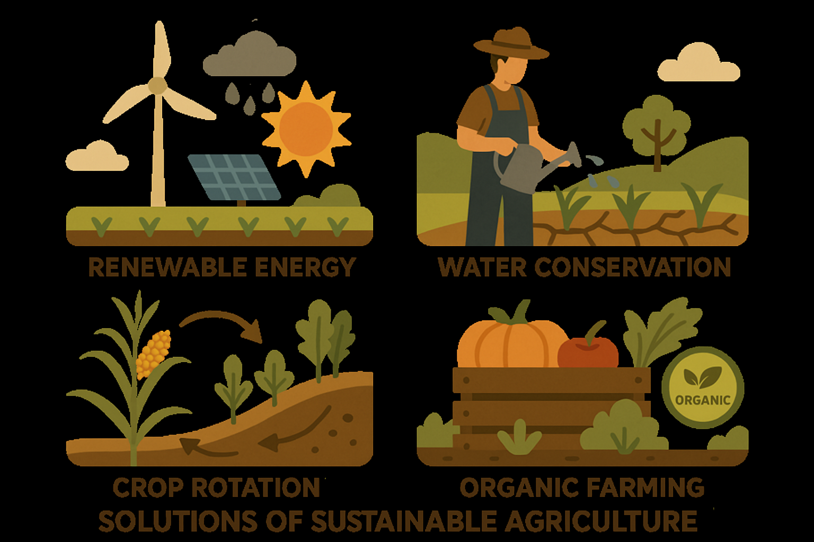

Sustainable Agriculture
Sustainable agriculture is a way of farming that focuses on producing food while preserving the environment, supporting farmers, and improving the quality of life for everyone.
It aims to balance productivity with environmental health and social responsibility, ensuring future generations can also benefit from natural resources without exhausting the earth's finite resources.

🚜 Why Go Sustainable?
Agriculture consumes approximately 70% of global freshwater withdrawals. By shifting to sustainable practices like precision farming and organic soil management, we can dramatically reduce water usage, eliminate toxic chemical runoff, and regenerate tired soils back to rich, fertile lands.
Problems of Sustainable Agriculture
1. High Initial Costs
Sustainable farming methods like organic certification, drip irrigation, or solar-powered tools often require a high upfront investment, which can be difficult for small farmers.
2. Lower Short-Term Yields
Compared to conventional farming, sustainable methods may produce lower crop yields in the short term, especially when transitioning from chemical-based farming.

3. Lack of Awareness and Education.
Many farmers lack access to training, resources, or knowledge about sustainable techniquesk, making it hard to adopt eco-friendly practices effectively.
4. Limited Market Access.
Farmers may struggle to find markets that value or pay a premium for sustainably produced goods, which discourages eco-friendly farming.
5. Pest and Disease Management
Without synthetic pesticides, managing pests and diseases can be more challenging and may require more labor-intensive methods.
Solutions for Conservation

1. High initial costs.
Government and NGOs can offer subsidies, low-interest loans, or grants to help farmers invest in sustainable technologies like drip irrigation and solar equipment.
2. Lower Short-Term Yields
Training and research can help farmers adopt methods that improve soil fertility and crop resilience over time, gradually increasing yields using natural inputs.
3. Lack of Awareness and Education
Extension services, farmer training programs, and awareness campaigns can provide farmers with the knowledge and tools needed for sustainable practices.
4. Limited Market Access.
Creating local farmers markets, online platforms, and certification systems(like "organic" or "eco-friendly" labels) can help connect sustainable farmers with supportive consumers.
5. Pest and Disease Management
Integrated Pest Management (IPM), natural predators, crop rotation, and resistant crop varieties can effectively manage pests without synthetic chemicals.
Actions You Can Take
1.Support local and organic Farmers.
2.Reduce food waste.
3.Educate and spread awareness.
4.Promote Eco-friendly farming policies.
5.Practice sustainable Gardening.
6.Encourage Crop Diversity.
7.Conserve Water.